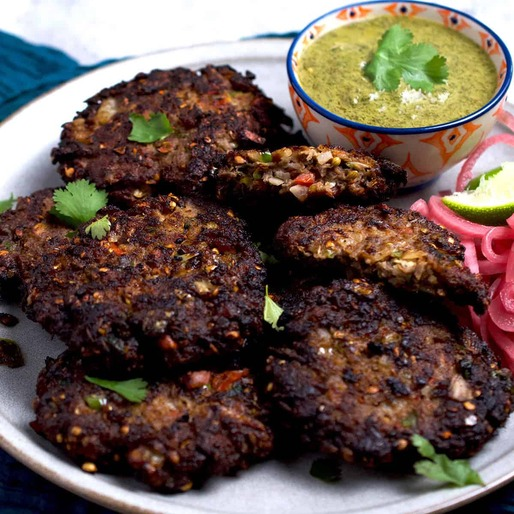

Home
Chapli Kabab

Tasty Peshawari Chapli Kabab
Chapli Kabab is a spicy, flavorful minced meat patty made with ground beef or mutton, fresh herbs, onions, tomatoes, and aromatic spices, shallow-fried until crispy on the outside and juicy inside, often served with chutney and naan.
Ingredients
- 500g ground beef or mutton
- 1 onion, finely chopped
- 1 tomato, finely chopped
- 2 green chilies, chopped
- 2 tbsp coriander seeds (crushed)
- 1 tbsp cumin seeds (crushed)
- 1 tsp red chili flakes
- 1 tsp garam masala
- 2 tbsp cornmeal or flour (for binding)
- Fresh coriander & mint leaves
- Salt (to taste)
- Oil (for shallow frying)
Steps
- Mix minced meat with onions, tomatoes, herbs, and spices.
- Add cornmeal/flour to bind mixture.
- Shape into flat round patties.
- Shallow fry in oil until golden brown and crispy.
- Serve hot with green chutney, naan, or rice.